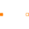

InterfacesInterfaces of magnetic network components |
|
Package Contents
|
Generic magnetic port |
|
|
Positive magnetic port |
|
|
Negative magnetic port |
|
|
Interface component with two magnetic ports for textual programming |
|
|
Extended TwoPort interface model with alias variables for magnetic voltage and flux |
|
|  |
Interface component including flux balance equation |
|
Partial model to include a conditional HeatPort in order to describe the power loss via a thermal network |
Information
This information is part of the Modelica Standard Library maintained by the Modelica Association.
This package contains connectors for the magnetic domain and partial models for lumped magnetic network components.